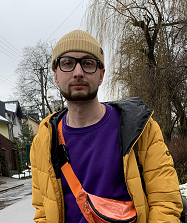

Kyryliuk Oleksandr
Бажана посада в IT сфері:
junior frontend developer
Контактні данні:
- Github
- Linkedin
- Email: oleksandr1339@gmail.com
- Tel: +380000022864
- Telegram: Oleksandr

Про себе
Веду активний спосіб життя і прагну розвиватися.
Вирішив опанувати нову для себе сферу, а саме IT.
Працюю над своїми soft skils.
Список технологій програмування які вивчаю:
Досвід роботи в IT
- Курси JS+HTML/CSS (18.03.2022-теперішній час)
- тижневий марафон по frontend developer
- self education
Освіта
Lviv Polytechnic National University (2011-2016)